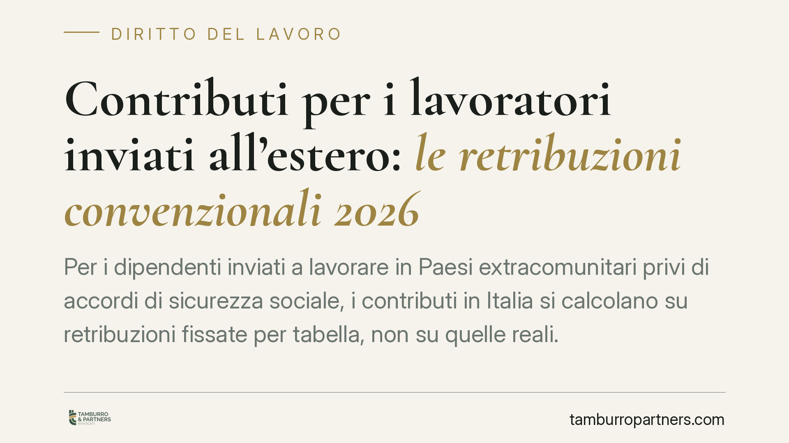

Contributi per i lavoratori inviati all'estero: le retribuzioni convenzionali 2026
Per i dipendenti inviati a lavorare in Paesi extracomunitari privi di accordi di sicurezza sociale, i contributi in Italia si calcolano su retribuzioni fissate per tabella, non su quelle reali. Le soglie per il 2026 vanno lette nel decreto ministeriale annuale e nella relativa circolare INPS. Chi ha già operato nei primi mesi dell'anno deve verificare se e come regolarizzare il pregresso.

Il meccanismo delle retribuzioni convenzionali
Quando un datore di lavoro italiano invia un dipendente a prestare attività in un Paese extra-UE con cui l'Italia non ha stipulato accordi di sicurezza sociale, i contributi previdenziali dovuti in Italia non si calcolano sulla retribuzione effettivamente corrisposta, ma su importi predeterminati: le cosiddette *retribuzioni convenzionali*.
Il fondamento normativo è l'art. 4, co. 1, del D.L. 3 ottobre 1987, n. 317, conv. in L. 3 dicembre 1987, n. 398. La norma prevede che le fasce di retribuzione imponibile siano aggiornate ogni anno con decreto del Ministero del Lavoro, in genere accompagnato da una circolare INPS di dettaglio applicativo.
> Da verificare alla fonte. Il decreto ministeriale e la circolare INPS relativi all'anno 2026 vanno riscontrati direttamente nei testi ufficiali (numero di protocollo, data di pubblicazione e tabelle): i riferimenti che circolano in anticipo non sono sempre consolidati. Consigliamo di operare solo sulle tabelle effettivamente pubblicate sul portale INPS e in Gazzetta Ufficiale.
I tre regimi da distinguere
Il trattamento contributivo cambia radicalmente a seconda del Paese di destinazione.
- Paesi UE/SEE e Svizzera. Si applicano i Regolamenti europei di coordinamento (CE 883/2004 e 987/2009). La contribuzione resta in Italia tramite il documento portatile A1, sulla retribuzione reale.
- Paesi extra-UE convenzionati. Operano gli accordi bilaterali di sicurezza sociale, che individuano lo Stato competente ed evitano la doppia contribuzione nelle materie coperte.
- Paesi extra-UE non convenzionati. È qui che entrano in gioco le retribuzioni convenzionali: in Italia resta dovuta la contribuzione calcolata sulle fasce tabellari.
Un punto va chiarito per evitare equivoci diffusi: le retribuzioni convenzionali determinano la sola base imponibile della contribuzione dovuta in Italia. Non eliminano l'eventuale obbligo contributivo nel Paese estero. Proprio perché manca una convenzione, il rischio concreto è la doppia contribuzione (in Italia per tabella, nello Stato ospitante secondo la sua legge interna), rischio che solo un accordo bilaterale potrebbe neutralizzare.
Criticità applicative spesso trascurate
L'applicazione delle tabelle non è meccanica. Alcuni profili richiedono attenzione.
Assimilazione della qualifica. Le fasce convenzionali sono organizzate per settore e per qualifica (operai, impiegati, quadri, dirigenti). Quando la posizione concreta non coincide con una voce tabellare, occorre individuare la fascia per assimilazione, documentando il criterio adottato per reggere a un eventuale controllo.
Fringe benefit e voci accessorie. La retribuzione convenzionale assorbe la generalità delle componenti; tuttavia la gestione di benefit significativi (alloggio, auto, indennità estero) va coordinata con la disciplina imponibile, evitando duplicazioni o indebite esclusioni.
Massimale contributivo. Per i lavoratori privi di anzianità al 31 dicembre 1995 può rilevare il massimale annuo ex art. 2, co. 18, L. 335/1995, da coordinare con l'imponibile convenzionale.
Profilo fiscale. Sul versante delle imposte opera una disciplina autonoma: l'art. 51, co. 8-bis, TUIR prevede, al ricorrere dei presupposti (attività all'estero in via continuativa come oggetto esclusivo del rapporto, per oltre 183 giorni nell'arco di dodici mesi), la determinazione del reddito di lavoro dipendente sulla base delle retribuzioni convenzionali. I presupposti contributivi e quelli fiscali non coincidono automaticamente e vanno verificati separatamente.
La regolarizzazione del pregresso
Le tabelle hanno efficacia dal 1° gennaio, ma il decreto e la circolare vengono pubblicati a esercizio avviato. Chi nei primi mesi dell'anno ha versato su valori provvisori o sulle tabelle precedenti deve riallineare l'imponibile ai nuovi importi.
L'INPS, di norma, indica nella circolare un termine entro cui effettuare la regolarizzazione del pregresso. La data precisa va letta nel testo ufficiale: non è prudente operare su scadenze presunte. Il rispetto del termine incide sull'eventuale applicazione di oneri accessori.
Cosa fare in concreto
- Verificate il Paese di destinazione e collocatelo in uno dei tre regimi (UE/SEE, convenzionato, non convenzionato) prima di scegliere la base imponibile.
- Scaricate il decreto e la circolare INPS 2026 dai canali ufficiali e applicate solo le tabelle effettivamente pubblicate.
- Documentate il criterio di assimilazione della qualifica alla fascia convenzionale, conservando il relativo prospetto.
- Ricalcolate i primi mesi dell'anno e predisponete la regolarizzazione entro il termine indicato nella circolare.
- Valutate separatamente il profilo fiscale ex art. 51, co. 8-bis, TUIR e, nei Paesi non convenzionati, il rischio di doppia contribuzione locale.
---
*Contributo informativo a cura di Tamburro & Partners - Avv. Giuseppe Tamburro. Non costituisce parere legale.*
Ogni storia di lavoro ha i suoi tempi.
Se gestisci HR e vuoi un confronto su contenzioso, ispezioni o licenziamenti, scrivi allo studio. Ti rispondiamo entro un giorno lavorativo.